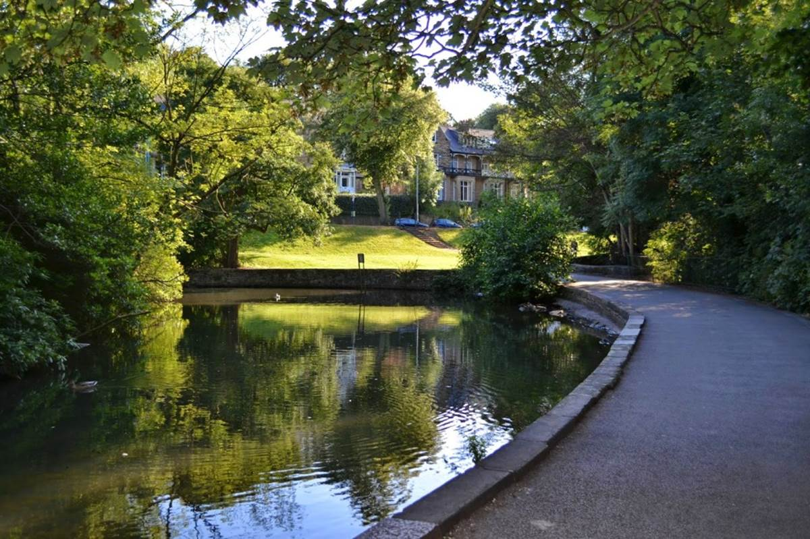
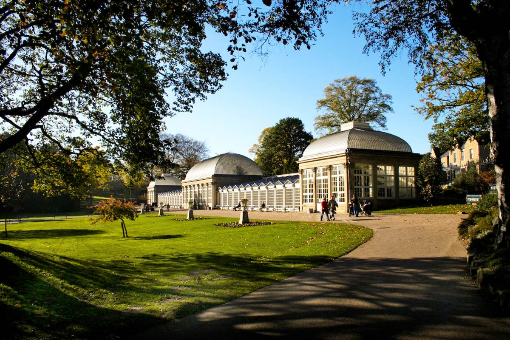
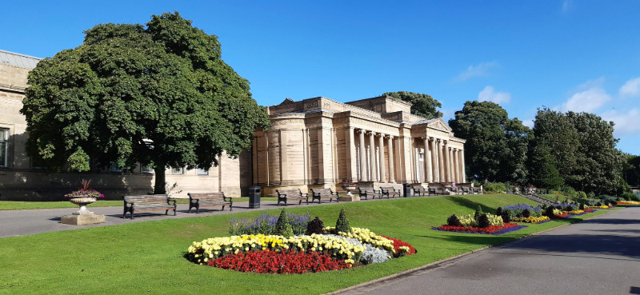

Endcliffe Park

Comprising parkland and woodland, it is the first in a series of parks and green spaces, known collectively as Porter Valley Parks, all of which lie along the course of the Porter Brook River. Located just below Endcliffe Village, it is the perfect place for any students wanting a break.
Location:
Link to the LocationThe Botanical Gardens

Situated close to the urban city centre, the Botanical Gardens were opened in 1836 and now cover 19 acres on a south-west sloping site. This gem is near Endcliffe Village, but also on most people's way back from town, so is a great spot to stop off and relax at, and maybe to enjoy a picnic!
Location:
Link to the LocationWeston Park

Weston Park is immediately west of the city centre, next to Weston Park Museum. It is also situated next to the University of Sheffield Library, Geography and Firth Court buildings, and across the road from Student's Union. It is one of the three parks in Crookesmoor. Being so close to the University buildings makes it the perfect spot right nearby to unwind after a long day of work.